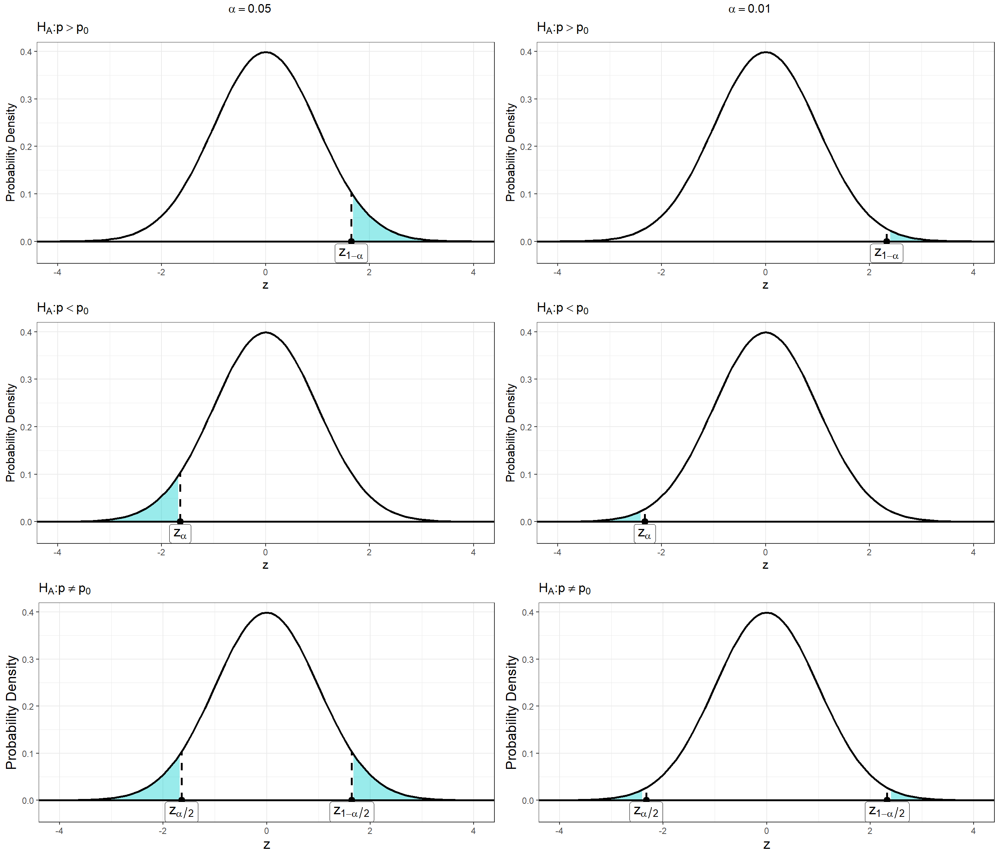

Warm Up: Consider the following example - a gardener is conducting an experiment to evaluate the effectiveness of a new fertilizer on the heights of tomato plants. They purchase 80 tomato plants from their local seedling outlet. The gardener randomly selects \(40\) of plants to receive a fertilizer and water mixture and the remaining half to receive only water. After one month the mean height is recorded in both groups and the difference in height between the two experimental groups of tomato plants is measured.
The gardener suspects that the plants which received the new fertilizer will be tend to be taller than the plants that received only water. They set the null hypothesis to be “no difference in height” which can be thought of as “the fertilizer has no effect on tomato plant growth”.
\[ H_0: \mu_d = 0 \]
\(\mu_d\) denotes the population mean difference in tomato plant height between the two experimental groups. We can use the sample mean difference \(\bar{x}_d\) to estimate \(\mu_d\) which is calculated as
\[\bar{x}_d = \frac{1}{n}\sum_i x_{i} - y_i \]
where \(x_i\) is the height of tomato plants receiving the fertilizer and \(y_i\) is the height the tomato plants receiving only water.
Since the suspicion is that the plants recieving fertilizer will be taller, the alternative hypothesis is
\[ H_A: \mu_d > 0 \]
The data from the gardeners experiment are shown below:
| Height Fertilized (Inches) | Height Water Only (Inches) | Difference In Height (Inches) |
|---|---|---|
| 43.60 | 38.15 | 5.45 |
| 44.42 | 40.15 | 4.28 |
| 48.90 | 35.81 | 13.08 |
| 45.18 | 49.89 | -4.72 |
| 45.32 | 45.95 | -0.63 |
| 49.29 | 36.40 | 12.89 |
| 46.15 | 39.35 | 6.80 |
| 41.84 | 39.09 | 2.75 |
| 43.28 | 44.20 | -0.91 |
| 43.89 | 40.66 | 3.23 |
| 48.06 | 42.04 | 6.02 |
| 45.90 | 40.88 | 5.02 |
| 46.00 | 40.82 | 5.18 |
| 45.28 | 46.61 | -1.33 |
| 43.61 | 40.07 | 3.54 |
| 49.47 | 47.22 | 2.25 |
| 46.24 | 34.65 | 11.59 |
| 40.08 | 43.40 | -3.31 |
| 46.75 | 41.51 | 5.25 |
| 43.82 | 41.89 | 1.93 |
| 42.33 | 42.56 | -0.23 |
| 44.46 | 38.94 | 5.51 |
| 42.43 | 39.63 | 2.80 |
| 43.18 | 36.82 | 6.35 |
| 43.44 | 36.61 | 6.83 |
| 40.78 | 42.24 | -1.46 |
| 47.09 | 42.84 | 4.26 |
| 45.38 | 41.22 | 4.17 |
| 42.15 | 44.78 | -2.63 |
| 48.13 | 49.41 | -1.27 |
| 46.07 | 38.99 | 7.08 |
| 44.26 | 31.53 | 12.73 |
| 47.24 | 45.12 | 2.11 |
| 47.20 | 38.09 | 9.10 |
| 47.05 | 38.18 | 8.87 |
| 46.72 | 45.20 | 1.52 |
| 46.38 | 39.83 | 6.55 |
| 44.85 | 36.00 | 8.85 |
| 44.24 | 41.74 | 2.49 |
| 44.05 | 40.43 | 3.62 |
The summary statistics from the gardeners data are listed below
| Name | Symbol | Value |
|---|---|---|
| Sample size | \(n\) | 40.00 |
| Mean Height (Fertilized) | \(\bar{x}\) | 45.11 |
| SD (Fertilized) | \(s_x\) | 2.24 |
| Mean Height (Water Only) | \(\bar{y}\) | 40.97 |
| SD (Water Only) | \(s_y\) | 3.93 |
| Mean Difference (Ferlized - Water Only) | \(\bar{x}_d\) | 4.14 |
| SD Difference | \(s_d\) | 4.43 |
Recall from last week that a significance test is a test of the null hypothesis. To test the null hypothesis, we compute the scenario given by the alternative hypothesis under the assumption that the null is true. In the case of this gardeners experiment, we need to compute the probability of observing a mean difference larger than the difference we observed under the sampling distribution of the null hypothesis. In other words, “how likely is it that we would see a difference in height as large as the one we observed, assuming that the true difference is zero?”
\[P(\bar{X} \geq \bar{x}_d | H_0 \ \text{true}) \]
To compute this probability, we need convert the difference we observed into a standardized score that we can look up in one of our tables. Since we are discussing a “mean” difference we can use the \(t\)-distribution as we did before with confidence intervals:
\[ t_{obs} = \frac{\bar{x}_d - \mu_d}{s_d/\sqrt{n}} = \frac{4.08 - 0}{4.43/\sqrt{40}} = 5.91 \sim t(n-1)\]
Where \(\bar{x}_d\) is the sample mean difference in height, \(\mu_d\) is population mean difference under the null hypothesis, and \(s_d\) is the sample standard deviation for the difference in height. The above formula converts the observed difference \(\bar{x}_d\) to a \(t\)-score from a \(t\)-distribution with \(n-1\) degrees of freedom under the assumption that the null hypothesis is true. \(t_{obs}\) is called the test statistic - it measures the discrepancy (distance) between the point estimate of the parameter and the hypothesized value of the parameter under the null hypothesis. It tells us approximately how many standard deviations the observed mean difference is from the population mean difference under the null.
Using the above formula the Gardner calculates a \(t\)-score of \(t_{obs} = 5.91\) with \(39\) degrees of freedom. The probability from earlier can be re-framed in the context of the \(t\)-distribution
\[P(t \geq t_{\text{obs}}| H_0 \ \text{true}) = 1-P(t< t_{\text{obs}}|H_0 \ \text{true}) \]
i.e the probability of observing a \(t\) value greater than the one we observed when the true difference is assumed to be \(\mu_d = 0\). For the gardener’s experiment, this probability is \(3.45e^{-7} \approx 0\), which is very small.
This probability is called the p-value and it measures the probability of observing an estimate as or more extreme than the the one we observed under the assumption that the null hypothesis is true. So what does this small probability mean? Just as we observed with the coin flip example from last week, it can mean one of two things:
We observed something very unusual
The assumption underling the calculation (i.e \(\mu_d = 0\) no difference in mean height) is not true.
We prefer the second conclusion when the \(p\)-value is “sufficiently” small and take it as evidence against the null hypothesis. So how small is small enough? By convention, most tests use a probability cutoff of \(5\%\) or less which is called the significance level of the test. The significance level of a test is denoted as \(\alpha\). For the gardeners test \(\alpha = 0.05\). \(\alpha\) sets the boundary for how big (or small) the test statistic needs to be to conclude that the test statistic is statistically significant.
In the plot above, \(t_{1-\alpha}\) denotes the boundary for significance in the gardners test. Any \(t\)-value greater than \(t_{1-\alpha}\) will have a p-value less than \(\alpha\) and be deemd significant
What were the steps involved with this test?
step 1 - The first step in any hypothesis test is to address the assumptions we make about the data. The hypothesis tests we will learn in this class assume that the data are produced by a randomization process. There may also be assumptions about the population distribution.
step 2 - Formulate the question you wish to evaluate and set up the null and alternative hypotheses.
step 3 - Calculate the test statistic which measures the discrepancy (distance) between the the estimate of the parameter and the hypothesized value of the parameter under the null.
step 4 - Compute the \(p\)-value - the probability of observing a value of a value of the test statistic that is as extreme or more extreme than the observed value given that the null hypothesis is true
step 5 - Make a conclusion about the null hypothesis - we either (i) fail to reject the null hypothesis and conclude that there is not sufficient evidence in favor of the alternative or (ii) reject the null hypothsis in favor of the alternative
With the examples of significance tests we have discussed thus far we have learned two formal significance tests: a test(s) tests concerning a population proportion \(p\) and tests concerning a population mean \(\mu\).
As we stated previously, the null hypothesis is a statement about the value of a population parameter. The alternative hypothesis is a statement about our suscpicions regarding the value of that parameter. The alternative hypothesis can be directional such as \(H_A: p > p_0\) (called an upper tail test) or \(H_A: p < p_0\) (called a lower tailed test). These types of alternative hypotheses are called one-sided because they direct our attention to either the lower or upper tail of the distribution of the test statistic. If our suspicion about the parameter is that it differs in either direction or if we are unsure, the alternative hypothesis is \(H_A: p \neq p_0\) and the test is called two-sided because the suspicion includes both the lower and upper tails of the distribution of the test statistic.
Because the alternative hypothesis expresses some effect that we hope to find evidence for, we often begin by stating \(H_A\) and then set up \(H_0\) as the statement that the “hoped-for” effect is not present. It’s important to note that the alternative hypothesis should express the hopes or suspicions we bring to the data. It is biased to first look at the data and then set up the alternative hypothesis based on what the data show. If you do not have a direction firmly in mind before gathering the data you must use a two.sided test.
The significance level of test (denoted \(\alpha\)) is how we turn the \(p\)-value of a significance test into a reject/not reject decision about the null hypothesis. It sets how “strong” the evidence against the null needs to be in order for a result to be deemed statistically significant. The researcher determines the significance level before conducting the experiment.
The critical value of a significance test is a point on the distribution of the test statistic that defines a set of values that call for rejecting the null hypothesis.
The critical value determines the boundary of the rejection region – the area in the tail (or tails) of the distribution of the test statistic for which a result is deemed significant. The rejection region has an area of exactly \(\alpha\).
The significance level, critical value, and rejection region are all related to each other but we typically only set the significance level. The critical value and rejection region then follow from the specified significance level. All three of these things are used to help us turn the \(p\)-value of a hypothesis test into a formal decision about the null hypothesis. The decision rule is as follows:
If \(p\)-value \(< \alpha\), then reject \(H_0\) (results are statistically significant)
If \(p\)-value \(\geq \alpha\), then do not reject \(H_0\) (results are not statistically significant)
So how does this relate the to critical value and rejection region? We can state the decision rule in terms of both of these quantities but to do so is more nuanced and depends on the direction (or lack there of) of the alternative hypothesis. For example, consider the null hypothesis and alternative hypotheses
\[ H_0: \mu_0 = 0 \] \[ H_A: \mu < \mu_0 \]
The decision rule stated in terms
If \(p\)-value \(< \alpha\) then \(t_{obs} < t_\alpha\); reject \(H_0\) (results are statistically significant) - this is the same as saying “if the test statistic falls within the rejection region then reject \(H_0\)”
If \(p\)-value \(\geq \alpha\), then \(t_{obs} \geq t_\alpha\); do not reject \(H_0\) (results are not statistically significant) - this is the same as saying “if the test statistic does not fall within the rejection region then do not reject \(H_0\)”
The critical value and rejection region of a test depend on the significance level of the test and the direction of the alternative hypothesis. Consider the plots below:
This plot depicts the decision rule for a given alternative hypothesis at a significance level \(\alpha = 0.05\). In each subplot, the rejection region is highlighted in turquoise and the critical value(s) are denoted by the vertical dashed lines.
Consider the six plots below which show the position of the critical value, and rejection region for the three types of alternative hypotheses at two significance levels. What do you notice about the relationship between the significance level and the rejection region?

Notice from the plots above that the alternative hypothesis also impacts the how significant a result must be in order to reject the null. Specifically, a result need not be as extreme when the alternative hypotheses \(H_A: p > p_0\) and \(H_A: p < p_0\) to be statistically significant. This is because when we suspected direction of the effect we have more information about the parameter which improves our ability to detect a significant result.